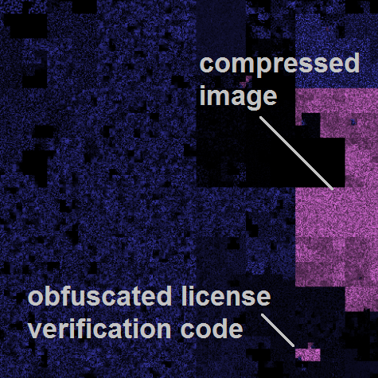
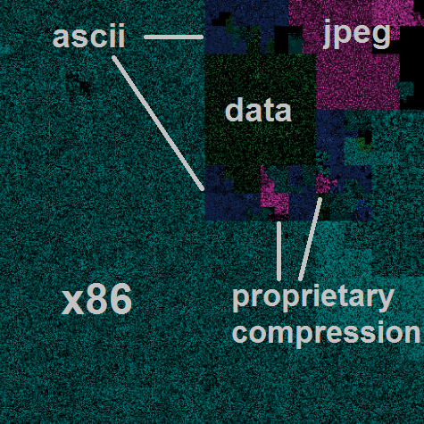
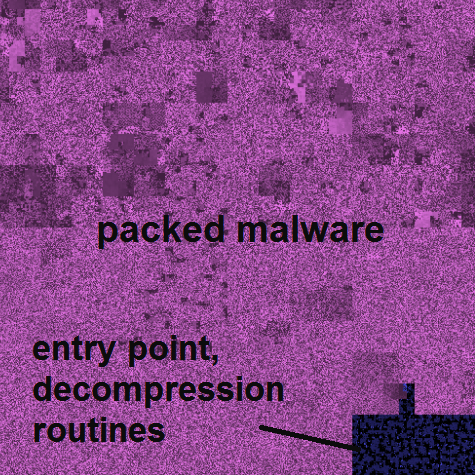

Finding a needle in a haystack.
Reverse engineers and forensic analysts
sift through mountains of data searching for a few key pieces.
With modern malware bastardizing executable header specifications,
firmware designers stripping identifiers from embedded data,
and anti-forensics software leaving analysts
with only the tattered remains of files,
we have found that headers tell us no more about content
than file extensions.
What we're left with is the arduous task of manually sifting
through millions of pages of hex looking for something recognizable.
Introducing ..cantor.dust..,
a breakthrough interactive binary visualization tool
for rapid reverse engineering and forensic analysis.
By translating binary information to a visual abstraction,
the reverser can comb through megabytes of arbitrary data in seconds,
searching for easily identifiable image patterns
rather than strings of familiar byte sequences.
Even previously unseen instruction sets and data formats
can be easily located and understood through their visual fingerprint.
..cantor.dust.. is a radical evolution of the traditional hex editor,
dramatically accelerating the analysis process,
and, for the experienced user,
forms an indispensible tool in the reverser's arsenal.
attempt to trim garbage from code, but they require constant updates,
a supported architecture, and are easily circumvented
searches a firmware image for embedded types,
but all too often firmware developers strip
headers and magic numbers from embedded data,
thwarting this simple analysis technique
are routinely faced with gigabytes of data and
the daunting task of rapidly identifying important information
are increasingly discovering unique and mutating instruction sets;
the simple task of differentiating code and data may require
weeks of work and a customized ida module
an effective way to sift through garbage,
with a rapid triage of remaining data.
to visualize known, structured data
there is
..cantor.dust..
...
automatically identified points of interest,
based on template data patterns,
highlighted for user analysis
 

..cantor.dust..
is designed and developed by
the.delta.axiom
several ..cantor.dust.. visualization techniques were inspired by research from security experts
gregory conti and aldo cortesi
copyright © 2012 Battelle Memorial Institute
|